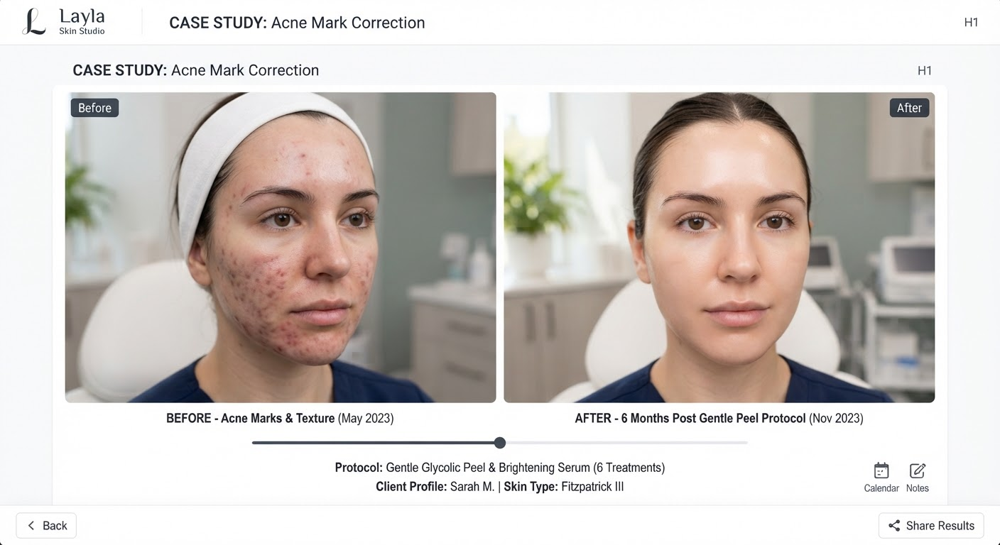

Before: Day 1
After: Wk 10
Acne marks · Peel
4 sessions
Mediterranean Erythema Protocol
Tailored lactic and mandelic formulation targeting Mediterranean erythema without peeling downtime. Paired with calming cica barrier infusion.
Target: Post-inflammatory tone
10 weeks total